H-01All women
රුධිර පීඩනය යනු කුමක්ද?
இரத்த அழுத்தம் என்றால் என்ன?
- රුධිර පීඩනය (BP) යනු ඔබේ රුධිර නාළවලට රුධිරය යොදන බලයයි.
- එය සංඛ්යා දෙකකින් ලියයි, උදා: 120/80.
- 140/90 හෝ ඊට වැඩි නම් අධිකයි.
- අධි රුධිර පීඩනය බොහෝවිට කිසිදු රෝග ලක්ෂණයක් නොපෙන්වයි. එබැවින් එය පරීක්ෂා කරනු ලැබේ.
- இரத்த அழுத்தம் (BP) என்பது இரத்தக் குழாய்களின் மீது இரத்தம் செலுத்தும் விசை.
- இது இரண்டு எண்களாக எழுதப்படும், எ.கா. 120/80.
- 140/90 அல்லது அதற்கு மேல் என்றால் அதிகம்.
- உயர் இரத்த அழுத்தம் பெரும்பாலும் எந்த அறிகுறியும் காட்டாது. அதனால்தான் அது பரிசோதிக்கப்படுகிறது.
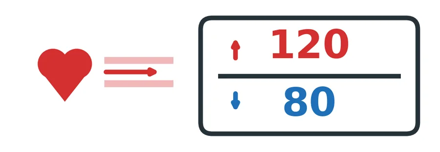
H-02All women
අධි රුධිර පීඩන වර්ග (සියලුදෙනා)
உயர் இரத்த அழுத்த வகைகள் (எல்லோரும்)
| වර්ගය | එය කුමක්ද |
|---|---|
| දිගුකාලීන අධි රුධිර පීඩනය | ගර්භණීභාවයට පෙර, හෝ ගර්භනී නොවන කාන්තාවක තුළ |
| ගර්භණීභාවයේ අධි රුධිර පීඩනය | සති 20 න් පසු අලුතින් ඇතිවේ. සාමාන්යයෙන් ප්රසූතියෙන් පසු සුව වේ. |
| ප්රී-එක්ලැම්ප්සියා | සති 20 න් පසු අධි රුධිර පීඩනය සමඟ මුත්රාවල ප්රෝටීන් හෝ වෙනත් අවයව බලපෑම්. භයානක විය හැක. |
- පාලනය නොකළ අධි රුධිර පීඩනය ආඝාතය, හෘද සහ වකුගඩු රෝග ඇති කළ හැක.
- ගර්භණීභාවයේදී එය දරුවාගේ වර්ධනය අඩාල වීම, කල් නොපිරී උපත සහ වලිප්පු ඇති කළ හැක.
| வகை | அது என்ன |
|---|---|
| நீண்டகால உயர் இரத்த அழுத்தம் | கர்ப்பத்திற்கு முன்பே, அல்லது கர்ப்பமில்லாத பெண்ணில் |
| கர்ப்பகால உயர் இரத்த அழுத்தம் | 20 வாரங்களுக்குப் பின் புதிதாக வருவது. பொதுவாகப் பிரசவத்திற்குப் பின் சரியாகிவிடும். |
| ப்ரீ-எக்லாம்ப்சியா | 20 வாரங்களுக்குப் பின் உயர் இரத்த அழுத்தத்துடன் சிறுநீரில் புரதம் அல்லது பிற உறுப்புப் பாதிப்பு. ஆபத்தானது. |
- கட்டுப்படுத்தப்படாத உயர் இரத்த அழுத்தம் பக்கவாதம், இதய, சிறுநீரக நோய்களை ஏற்படுத்தலாம்.
- கர்ப்பத்தில் இது குழந்தையின் வளர்ச்சிக் குறைவு, குறைப்பிரசவம், வலிப்பு ஆகியவற்றையும் ஏற்படுத்தலாம்.
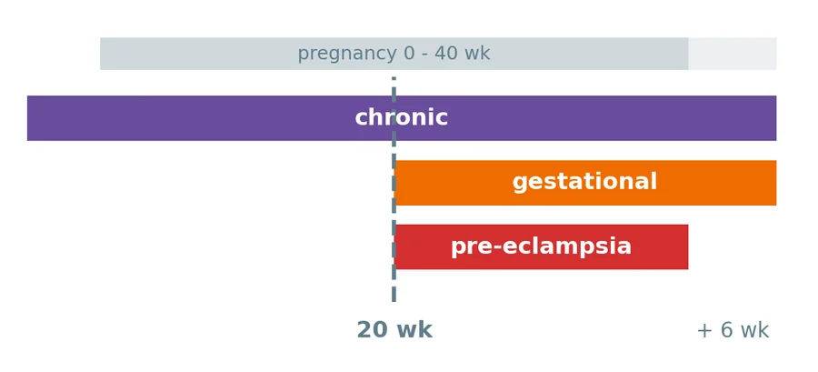
H-03All women
ඔබේ රුධිර පීඩන අගයන් (සියලුදෙනා)
உங்கள் இரத்த அழுத்த அளவுகள் (எல்லோரும்)
| කියවීම | ක්රියාමාර්ගය |
|---|---|
| 140/90 ට අඩු | සාමාන්යයි. රුධිර පීඩන ටැබ්ලට් ගන්නේ නම් ඉලක්කය 135/85 හෝ ඊට අඩුයි. |
| 140/90 හෝ ඊට වැඩි | එදිනම ඔබේ සායනයට දන්වන්න |
| 160/110 හෝ ඊට වැඩි, හෝ අනතුරු ඇඟවීමේ ලක්ෂණයක් (H-07) | දැන්ම රෝහලට එන්න |
- ප්රතිකාර ඉලක්කය: 135/85. ඔබේ සායනය වෙනත් ඉලක්කයක් දිය හැක. මෙහි ලියන්න: ____
| அளவீடு | செய்ய வேண்டியது |
|---|---|
| 140/90 க்குக் குறைவு | இயல்பு. இரத்த அழுத்த மாத்திரை எடுப்பவர்களுக்கு இலக்கு 135/85 அல்லது அதற்குக் குறைவு. |
| 140/90 அல்லது அதற்கு மேல் | அதே நாளில் உங்கள் கிளினிக்கிற்குத் தெரிவியுங்கள் |
| 160/110 அல்லது அதற்கு மேல், அல்லது ஆபத்து அறிகுறி (H-07) | உடனே மருத்துவமனைக்கு வாருங்கள் |
- சிகிச்சை இலக்கு: 135/85. உங்கள் கிளினிக் வேறு இலக்கைத் தரலாம். இங்கே எழுதுங்கள்: ____
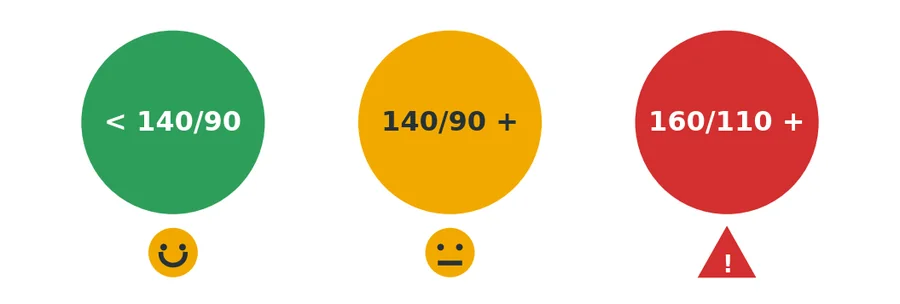
H-04All women
රුධිර පීඩනය පරීක්ෂා කිරීම (සියලුදෙනා)
இரத்த அழுத்தத்தைப் பரிசோதித்தல் (எல்லோரும்)
- හිඳගෙන මිනිත්තු 5 ක් විවේක ගන්න.
- පරීක්ෂාවට මිනිත්තු 30 කට පෙර තේ, කෝපි, දුම්පානය හෝ ව්යායාම නොකරන්න. මුත්රාශය හිස් කරන්න.
- පිටට ආධාරයක්, පාද බිම තබා, අත හදවත මට්ටමට තබා ගන්න.
- ඉහළ අතට නිවැරදි ප්රමාණයේ කෆ් එකක් පළඳින්න. ලොකු අත් සඳහා විශාල කෆ් එකක් අවශ්යයි.
- කතා නොකරන්න.
- විනාඩියක ඉඩක් තබා කියවීම් දෙකක් ලබා ගන්න. දෙකම ලියන්න.
- සෑම දිනකම එකම වේලාවලට (උදේ සහ සවස), හෝ උපදෙස් ලද පරිදි.
- உட்கார்ந்து 5 நிமிடம் ஓய்வெடுங்கள்.
- பரிசோதனைக்கு 30 நிமிடம் முன்பு தேநீர், காபி, புகைபிடித்தல், உடற்பயிற்சி வேண்டாம். சிறுநீர்ப்பையைக் காலி செய்யுங்கள்.
- முதுகுக்கு ஆதரவு, பாதங்கள் தரையில், கை இதய மட்டத்தில் இருக்க வேண்டும்.
- மேல் கையில் சரியான அளவுள்ள கஃப்பைக் கட்டுங்கள். பருமனான கைகளுக்கு பெரிய கஃப் தேவை.
- பேச வேண்டாம்.
- ஒரு நிமிட இடைவெளியில் இரண்டு அளவீடுகள். இரண்டையும் எழுதுங்கள்.
- தினமும் ஒரே நேரங்களில் (காலை மற்றும் மாலை), அல்லது கூறியபடி.
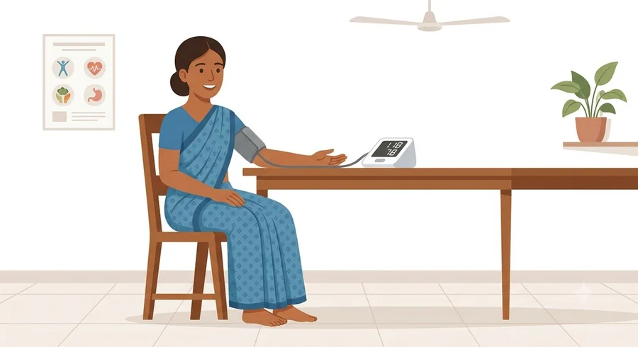
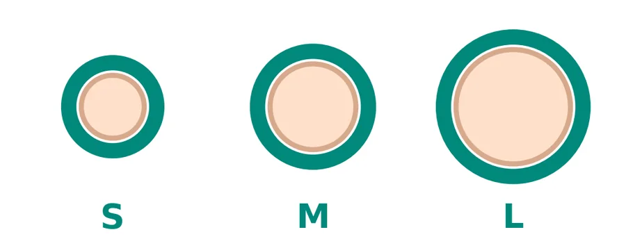
H-05All women
ඔබේ බෙහෙත් (සියලුදෙනා)
உங்கள் மருந்துகள் (எல்லோரும்)
- සෑම දිනකම ගන්න. සනීපෙන් සිටියත්, නවත්වන්නවත් මඟ හරින්නවත් එපා.
- ගර්භනී: සාමාන්යයෙන් ලැබටලෝල්, නිෆෙඩිපින් සහ මෙතිල්ඩෝපා භාවිතා කරයි. මෙතිල්ඩෝපා නිසා නිදිමත ඇති විය හැක.
- ගර්භණීභාවයේදී ආරක්ෂිත නොවන බෙහෙත්: එනලාප්රිල්, ලොසාටන්, ඇම්ලොඩිපින්. ඒවා ගන්නා අතරේ ගැබ් ගත්තොත්, හෝ ගැබ් ගැනීමට සැලසුම් කරන්නේ නම්, වහාම ඔබේ සායනයට යන්න.
- ප්රසූතියෙන් පසු ඔබේ සායනය ටැබ්ලට් වෙනස් කළ හැක. කිරි දීමේදී ආරක්ෂිත ඒවා මොනවාදැයි අසන්න.
- ඔබට ඇදුම තිබේ නම්, ඔබට ප්රතිකාර කරන සැමට කියන්න. ඇදුම ඇති අය සඳහා ලැබටලෝල් වැළැක්විය යුතුයි.
- වේදනා නාශක: පැරසිටමෝල් භාවිතා කරන්න. ඩයික්ලොෆෙනැක් වැනි ඒවා ඔබේ සායනය කියන්නේ නම් මිස වළක්වන්න.
- උපත් පාලන පෙති සහ හෝමෝන ප්රතිකාර රුධිර පීඩනය ඉහළ දැමිය හැක. පටන් ගැනීමට පෙර ඔබට අධි රුධිර පීඩනය ඇති බව ඔබේ සායනයට කියන්න.
- தினமும் எடுங்கள், நலமாக உணர்ந்தாலும். நிறுத்தவோ தவறவிடவோ வேண்டாம்.
- கர்ப்பிணி: பொதுவாகப் பயன்படுத்துவது லபெடலால், நிஃபெடிபின், மெதில்டோபா. மெதில்டோபா தூக்கக் கலக்கம் தரலாம்.
- கர்ப்பத்தில் பாதுகாப்பற்றவை: எனலாப்ரில், லோசார்டன், அம்லோடிபின். இவற்றை எடுக்கும்போது கர்ப்பமானாலோ, கர்ப்பமாகத் திட்டமிட்டாலோ உடனே உங்கள் கிளினிக்கைப் பாருங்கள்.
- பிரசவத்திற்குப் பின் உங்கள் கிளினிக் மாத்திரையை மாற்றலாம். தாய்ப்பாலூட்டும்போது எவை பாதுகாப்பானவை என்று கேளுங்கள்.
- உங்களுக்கு ஆஸ்துமா இருந்தால், உங்களுக்குச் சிகிச்சை அளிப்பவர் அனைவரிடமும் சொல்லுங்கள். ஆஸ்துமாவில் லபெடலாலைத் தவிர்க்க வேண்டும்.
- வலி நிவாரணிகள்: பாரசிட்டமால் பயன்படுத்துங்கள். உங்கள் கிளினிக் கூறாவிட்டால் டைக்ளோஃபெனாக் போன்றவற்றைத் தவிர்க்கவும்.
- கருத்தடை மாத்திரை, ஹார்மோன் சிகிச்சை இரத்த அழுத்தத்தை உயர்த்தலாம். தொடங்குவதற்கு முன் உங்களுக்கு உயர் இரத்த அழுத்தம் இருப்பதை உங்கள் கிளினிக்கிற்குச் சொல்லுங்கள்.
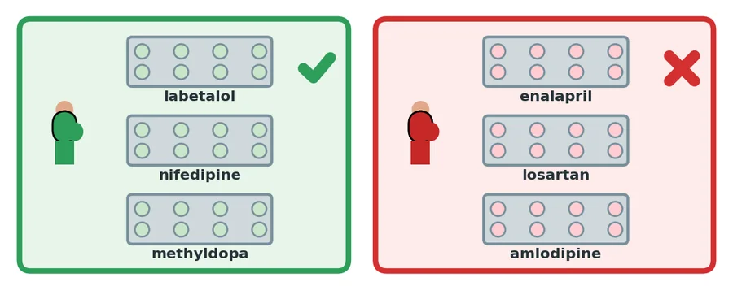
H-06All women
ආහාර සහ ජීවන රටාව (සියලුදෙනා)
உணவும் வாழ்க்கை முறையும் (எல்லோரும்)
- ලුණු අඩුවෙන් ගන්න. වියළි මාළු, ලුණු මාළු, අච්චාරු, පපඩම්, චිප්ස්, ඉන්ස්ටන්ට් නූඩ්ල්ස්, ස්ටොක් කියුබ් සීමා කරන්න.
- මේසයේදී ලුණු එකතු නොකරන්න.
- පලතුරු සහ එළවළු වැඩියෙන්.
- නිසි බර (පරිච්ඡේදය 5). දිනපතා ඇවිදින්න.
- දුම්පානය, මත්පැන්, දුම්කොළ සහිත බුලත් එපා.
- ගර්භනී: වම් පැත්තට හැරී විවේක ගන්න.
- உப்பைக் குறையுங்கள். கருவாடு, உப்புமீன், ஊறுகாய், அப்பளம், சிப்ஸ், இன்ஸ்டன்ட் நூடில்ஸ், ஸ்டாக் கியூப் ஆகியவற்றைக் குறைக்கவும்.
- மேசை உப்பைச் சேர்க்க வேண்டாம்.
- பழங்களும் காய்கறிகளும் அதிகம்.
- சரியான எடை (அத்தியாயம் 5). தினமும் நடக்கவும்.
- புகைபிடித்தல், மது, புகையிலை போட்ட வெற்றிலை வேண்டாம்.
- கர்ப்பிணி: இடது பக்கமாகச் சாய்ந்து ஓய்வெடுங்கள்.
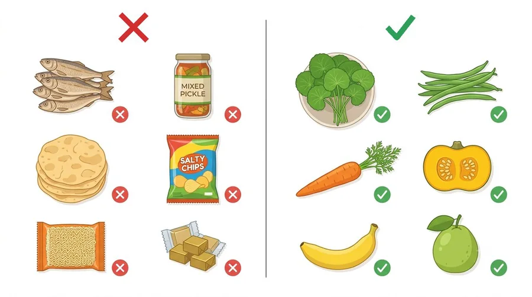
H-07Pregnant
ප්රී-එක්ලැම්ප්සියා අනතුරු ඇඟවීම්: දැන්ම රෝහලට එන්න (ගර්භනී)
ப்ரீ-எக்லாம்ப்சியா ஆபத்து அறிகுறிகள்: உடனே மருத்துவமனைக்கு வாருங்கள் (கர்ப்பிணி)
- පහව නොයන දරුණු ඔළු කැක්කුම.
- බොඳ පෙනීම හෝ ආලෝක ගැටිති.
- උදරයේ ඉහළ දකුණු පැත්තේ වේදනාව හෝ ගර්භණීභාවයේ අග කාලයේ වමනය.
- මුහුණ සහ අත් හදිසියේ ඉදිමීම.
- දරුවාගේ චලනය අඩුවීම.
- වලිප්පු හෝ සිතේ පටලැවිලි සහිත ස්වභාවය.
- මේවා ප්රසූතියෙන් පසුවද ආරම්භ විය හැක. සති 6 ඇතුළත මේවා තිබේ නම් පැමිණෙන්න.
- ප්රී-එක්ලැම්ප්සියා රෝහලේදී ප්රතිකාර කෙරේ. ප්රසූතිය තමයි සුවය.
- நீங்காத கடுமையான தலைவலி.
- பார்வை மங்குதல் அல்லது ஒளிக்கீற்றுகள்.
- மேல் வலப்பக்க வயிற்று வலி அல்லது கர்ப்பத்தின் பிற்பகுதியில் வாந்தி.
- முகம், கைகள் திடீரென வீங்குதல்.
- குழந்தையின் அசைவு குறைதல்.
- வலிப்பு அல்லது குழப்பம்.
- இவை பிரசவத்திற்குப் பின்னரும் தொடங்கலாம். 6 வாரங்களுக்குள் இவை இருந்தால் வாருங்கள்.
- ப்ரீ-எக்லாம்ப்சியாவுக்கு மருத்துவமனையில் சிகிச்சை அளிக்கப்படும். பிரசவமே தீர்வு.
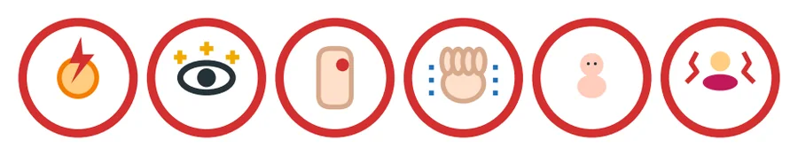
H-08Pregnant, if prescribed
ඇස්ප්රීන් (ගර්භනී, නියම කළ විට)
ஆஸ்பிரின் (கர்ப்பிணி, பரிந்துரைத்தால்)
- සමහර කාන්තාවන්ට ප්රී-එක්ලැම්ප්සියා වීමේ අවදානම අඩු කිරීමට ගර්භණීභාවයේ මුල සිට රාත්රියට අඩු මාත්රාවේ ඇස්ප්රීන් ලබා දේ.
- ඔබට ලියා දී ඇති මාත්රාව ගන්න.
- ඔබට ඇදුම, ගැස්ට්රයිටිස් හෝ ආමාශයේ තුවාල තිබේ නම්, හෝ වේදනා නාශකයකින් ප්රතික්රියාවක් වී ඇත්නම් ඔබේ සායනයට කියන්න.
- சில பெண்களுக்கு ப்ரீ-எக்லாம்ப்சியா வரும் வாய்ப்பைக் குறைக்க ஆரம்பக் கர்ப்பத்திலிருந்து இரவில் குறைந்த அளவு ஆஸ்பிரின் தரப்படும்.
- உங்களுக்கு எழுதித் தரப்பட்ட அளவை எடுங்கள்.
- உங்களுக்கு ஆஸ்துமா, இரைப்பை அழற்சி அல்லது வயிற்றுப் புண் இருந்தால், அல்லது ஒரு வலி நிவாரணியால் எதிர்வினை ஏற்பட்டிருந்தால் உங்கள் கிளினிக்கிற்குச் சொல்லுங்கள்.
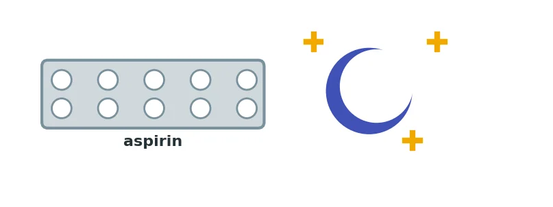
H-09Pregnant
ප්රසූතියෙන් පසු (ගර්භනී)
பிரசவத்திற்குப் பின் (கர்ப்பிணி)
- පළමු සතියේදී රුධිර පීඩනය ඉහළ යා හැක.
- ටැබ්ලට් ගන්නේ නම් සති 1-2 කදී නැවත පරීක්ෂා කරන්න. සෑම කෙනෙකුටම සති 6 කදී නැවත පරීක්ෂා කිරීම අවශ්ය වේ. මඟ නොහරින්න.
- ජීවිතාන්තය දක්වා වාර්ෂික රුධිර පීඩන පරීක්ෂාව. ගර්භණීභාවයේදී අධි රුධිර පීඩනය තිබූ කාන්තාවන්ට පසුව අධි රුධිර පීඩනය වැළඳීමේ අවදානම වැඩිය.
- ඊළඟ ගර්භණීභාවය: කලින්ම සායනයට කියන්න.
- முதல் வாரத்தில் இரத்த அழுத்தம் உயரலாம்.
- மாத்திரை எடுத்தால் 1-2 வாரங்களில் மீள்பரிசோதனை. எல்லோருக்கும் 6 வாரங்களில் மீள்பரிசோதனை. தவறவிடாதீர்கள்.
- வாழ்நாள் முழுவதும் ஆண்டுதோறும் இரத்த அழுத்தப் பரிசோதனை. கர்ப்பத்தில் உயர் இரத்த அழுத்தம் இருந்த பெண்களுக்குப் பின்னர் உயர் இரத்த அழுத்தம் வரும் வாய்ப்பு அதிகம்.
- அடுத்த கர்ப்பம்: முன்கூட்டியே கிளினிக்கைப் பாருங்கள்.
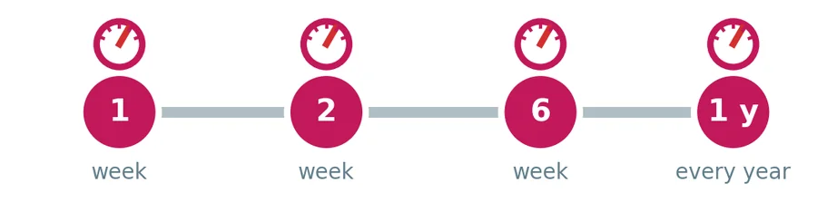
H-10Non-pregnant (gynae)
නාරිවේද කාන්තාවන්ගේ අධි රුධිර පීඩනය (ගර්භනී නොවන)
மகளிர் நோய் கிளினிக் பெண்களில் உயர் இரத்த அழுத்தம் (கர்ப்பமில்லாதவர்)
- බෙහෙත් සෑම දිනකම ගන්න. ඔබේ රුධිර පීඩන සටහන් පොත හෝ සායන පොත ගෙන එන්න.
- ශල්යකර්මයට පෙර: ඔබට අධි රුධිර පීඩනය ඇති බව ඔබ රැකබලා ගන්න සැමට කියන්න. රුධිර පීඩන ටැබ්ලට් උපදෙස් දුන් පරිදි ගන්න.
- ගැබ් ගැනීමට සැලසුම් කරනවාද? පළමුව ඔබේ සායනය බලන්න. ලොසාටන්, එනලාප්රිල් සහ ඇම්ලොඩිපින් ගැබ් ගැනීමට පෙර වෙනස් කළ යුතුයි.
- ඔසප් නැවතීම රුධිර පීඩනය ඉහළ දැමිය හැක. සෑම වසරකම පරීක්ෂා කරන්න.
- ආඝාත ලක්ෂණ: මුහුණ ඇදවීම, අත දුර්වල වීම, කතාව අපැහැදිලි වීම. වහාම රෝහලට එන්න.
- மருந்துகளைத் தினமும் எடுங்கள். உங்கள் இரத்த அழுத்தக் குறிப்பேடு அல்லது கிளினிக் புத்தகத்தைக் கொண்டுவாருங்கள்.
- அறுவைச் சிகிச்சைக்கு முன்: உங்களைக் கவனிப்பவர்கள் எல்லோரிடமும் உங்களுக்கு உயர் இரத்த அழுத்தம் இருப்பதைச் சொல்லுங்கள். இரத்த அழுத்த மாத்திரைகளை அறிவுறுத்தியபடி எடுங்கள்.
- கர்ப்பமாகத் திட்டமிடுகிறீர்களா? முதலில் உங்கள் கிளினிக்கைப் பாருங்கள். லோசார்டன், எனலாப்ரில், அம்லோடிபின் ஆகியவற்றைக் கர்ப்பமாவதற்கு முன் மாற்ற வேண்டும்.
- மாதவிடாய் நிறுத்தம் இரத்த அழுத்தத்தை உயர்த்தலாம். ஆண்டுதோறும் பரிசோதியுங்கள்.
- பக்கவாத அறிகுறிகள்: முகம் கோணுதல், கை பலவீனம், பேச்சுக் குளறல். உடனே மருத்துவமனைக்கு வாருங்கள்.
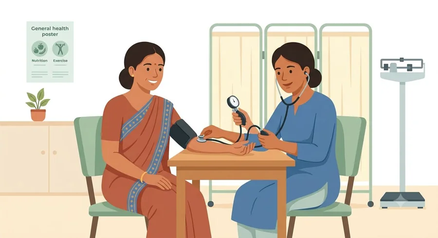
H-11All women
මිථ්යා සහ සත්ය (සියලුදෙනා)
கட்டுக்கதைகளும் உண்மைகளும் (எல்லோரும்)
| මිථ්යාව | සත්යය |
|---|---|
| "රුධිර පීඩන ටැබ්ලට් මගේ දරුවාට හානි කරයි." | අනතුර වන්නේ පාලනය නොකළ රුධිර පීඩනයයි. ගර්භණීභාවයේදී භාවිතා කරන ටැබ්ලට් ආරක්ෂිතයි. |
| "මට සනීපයි, එබැවින් නවත්වන්න පුළුවන්." | අධි රුධිර පීඩනය බොහෝවිට ලක්ෂණ නොපෙන්වයි. |
| "ලුණු වලින් පමණයි වන්නේ." | හේතු බොහෝය. බෙහෙත් අවශ්යයි. |
| "පාද ඉදිමීම යනු ප්රී-එක්ලැම්ප්සියා." | සුළු පාද ඉදිමීම සුලභයි. ඔළු කැක්කුම සමඟ මුහුණ සහ අත් හදිසියේ ඉදිමීමයි ගැටලුව. |
| கட்டுக்கதை | உண்மை |
|---|---|
| "இரத்த அழுத்த மாத்திரைகள் என் குழந்தைக்குத் தீங்கு செய்யும்." | கட்டுப்படுத்தப்படாத இரத்த அழுத்தமே ஆபத்து. கர்ப்பத்தில் பயன்படுத்தும் மாத்திரைகள் பாதுகாப்பானவை. |
| "எனக்கு நலமாக இருக்கிறது, நிறுத்திவிடலாம்." | உயர் இரத்த அழுத்தம் பெரும்பாலும் அறிகுறி காட்டாது. |
| "உப்பினால் மட்டுமே வருகிறது." | பல காரணங்கள் உண்டு. மருந்து அவசியம். |
| "கால் வீக்கம் என்றால் ப்ரீ-எக்லாம்ப்சியா." | லேசான கால் வீக்கம் சாதாரணம். தலைவலியுடன் முகம், கைகள் திடீரென வீங்குவதே கவலைக்குரியது. |